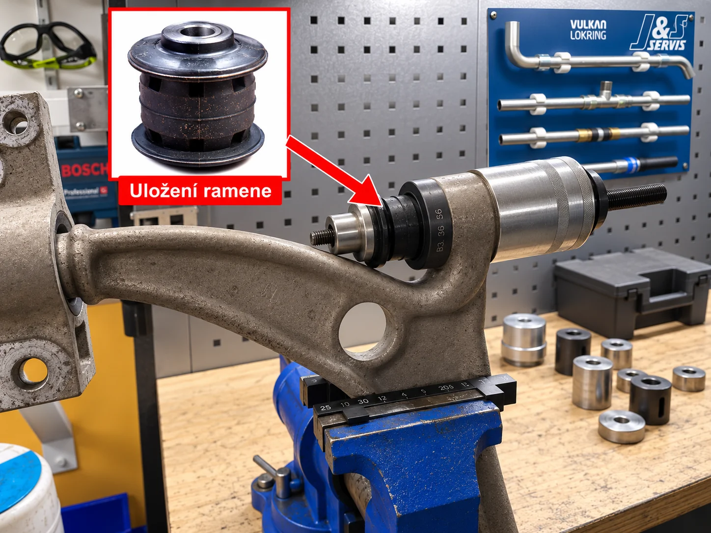
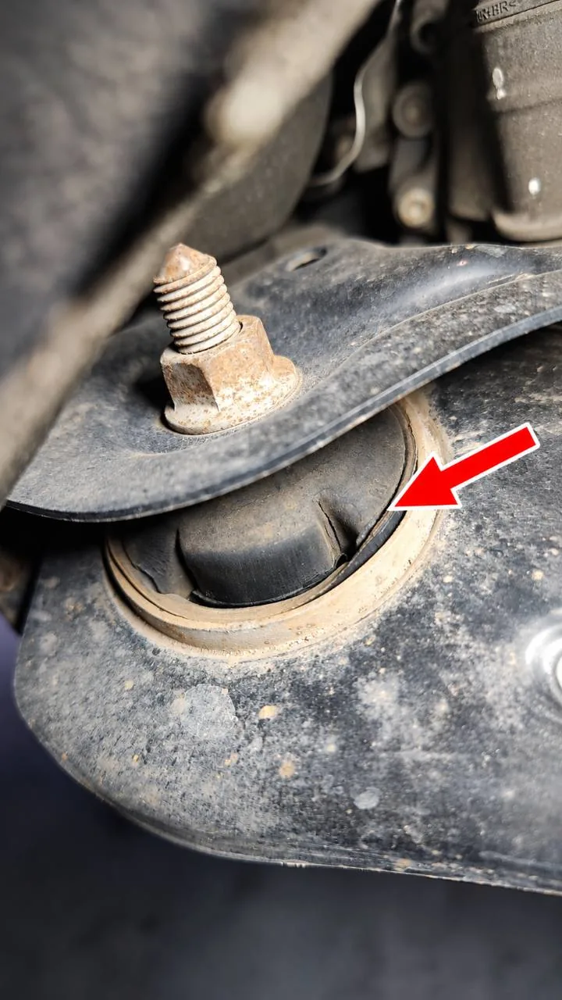

Заміна сайлентблоків підрамника та важелів підвіски
Спеціалізований ремонт ходової частини з використанням оригінальних сервісних пристроїв VAS.
У J&S servis ми діагностуємо та замінюємо гумометалеві сайлентблоки підрамника та важелів підвіски на автомобілях Volkswagen, Audi, Škoda, SEAT і CUPRA.
Зношені або пошкоджені сайлентблоки можуть спричинити стукіт і вібрацію підвіски, неточність кермового керування, зниження стійкості або нерівномірне зношування шин.
Заміна без зайвого розбирання підвіски
Завдяки спеціальним пресовим пристосуванням на вибраних автомобілях ми можемо замінити опори безпосередньо на автомобілі, без повного демонтажу підрамника.
Такий порядок дає можливість обмежити обсяг демонтажних робіт, скоротити час ремонту, а в деяких випадках також зменшити загальну вартість.
Цей спосіб заміни залежить від конструкції автомобіля, доступу до втулок і процедури виробника. При необхідності виконуємо необхідний частковий демонтаж.
Оригінальний сервісний інструмент VAS
Для заміни втулки підрамника ми використовуємо інструменти, зокрема прес-інструмент VAS 6779 A. Втулки важелів підвіски замінюються за допомогою відповідного пресового обладнання для конкретної конструкції компонента.
Спеціалізовані пристрої дозволяють контрольовано випресовувати старий сайлентблок і точно запресовувати нову деталь, дотримуючись встановленої позиції, орієнтації та процедури обслуговування.
Правильна установка має важливе значення для роботи втулки, довговічності ремонту та безпечного використання.
Фото з нашого сервісу
Приклади роботи з пресовими пристроями під час заміни сайлентблоків підрамника та важелів підвіски. На фото показані різні етапи ремонту.




Перевірка кутів установлення коліс після ремонту
Після заміни сайлентблоків ми оцінюємо необхідність перевірки й регулювання кутів установлення коліс відповідно до виконаних робіт та вимог виробника.
Ми використовуємо професійну систему Beissbarth VAS 701 011 3D для вимірювання та регулювання.
Обсяг ремонту та ціна
Обсяг і ціну ремонту визначаємо індивідуально відповідно до автомобіля, типу сайлентблока, доступу до нього та стану підвіски. Додаткові роботи й регулювання кутів установлення коліс оплачуються окремо за домовленістю із замовником.
Перед записом на обслуговування
Скрип, стукіт або зміна поведінки автомобіля самі по собі не визначають несправний сайлентблок. Обсяг ремонту підтверджуємо перевіркою конкретної підвіски; подальше вимірювання геометрії залежить від виконаної роботи.